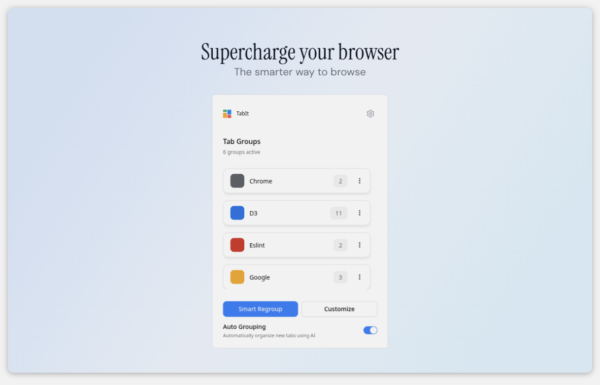

Computer Science at University of
Maryland.
Passionate about building scalable infrastructure, distributed systems, and exploring the mathematics of AI.
M.S. Machine Learning & B.S. Computer ScienceSep 2025 — Expected May 2027
Master of Science in Machine Learning (Expected May 2027)
Bachelor of Science in Computer Science (May 2024) · Dean's
List
Relevant Courses: Machine Learning, Computer Vision, Robotics, Deep
Learning, Data Structures and Algorithms
Experience
Research Assistant
University of Maryland, College ParkNov 2025 - Present
Developed GPU-accelerated spatiotemporal embeddings for high-rate event camera streams,
enabling efficient ML inference with optimized CUDA-based parallelization.
Conducted data-driven analysis of aviation network resilience using network-level
modeling on Delta system outage data.
Applied NLP and sentiment analysis to TripAdvisor low-altitude travel reviews to extract
passenger perception dimensions.
Software Engineer
ModeSens (Remote)Jun 2025 - Sep 2025
Built a distributed e-commerce crawler using asynchronous pipelines and
serverless triggers to automatically ingest product data from 30+ merchant catalogs with AI-based analysis.
Built an NLP pipeline to normalize user search queries against merchant catalogs, improving search precision by 13%.
Implemented an image-based product matching workflow that compares user-uploaded images
against internal product catalogs to support visual search and recommendations.
Software Engineer
Bank of China, USAJul 2024 - May 2025
Led bug bash and reliability efforts for internal enterprise systems, resolving 70+
high-impact issues and reducing productivity-blocking tickets by 30%.
Implemented a secure client authorization framework using cryptographic signatures and
the Chain of Responsibility pattern, adopted by 15+ internal teams.
Built AWS-based data pipelines (EC2, S3, RDS) for real-time ingestion and storage of
financial transaction data, improving data reliability and operational efficiency.
Software Engineer Intern
Air ChinaMay 2023 - Aug 2023
Developed Unix shell scripts to automate system backups across Linux environments,
reducing manual workload by 40%.
Revamped the secure login system with mobile QR code scanning, streamlining user
identification (adopted in 2024).
Projects

TabIt - AI Tab Manager
Smart browser extension using Local AI (TF-IDF & Leiden Clustering) for automatic tab management. Features real-time organization, hierarchical clustering for 100+ tabs, and strict privacy by running entirely on-device.
ReactViteTF-IDFLeiden AlgorithmWeb Workers
Computer Vision & Depth Prediction
Proposed a mathematical method for depth prediction from DIGIT tactile
images. Implemented CNN classifiers, GMM color segmentation, and panorama stitching.
PythonComputer VisionMath
Terpiez AR Game
AR mobile game for capturing virtual creatures. Features real-time
location tracking, persistent player data with Redis, and interactive maps.
FlutterDartRedisGoogle Maps
AI Game Agents
Advanced AI algorithms for Pacman agents: A* Search, Minimax,
Q-Learning, and Particle Filtering.
PythonReinforcement Learning
Neural Network from Scratch
Implementation of core deep learning algorithms (backprop, optimizers)
without ML libraries to understand AI math.
PythonNumPyMath
Product Matching Tool
Internal tool using perceptual hashing and SSIM to match product images
across e-commerce platforms.